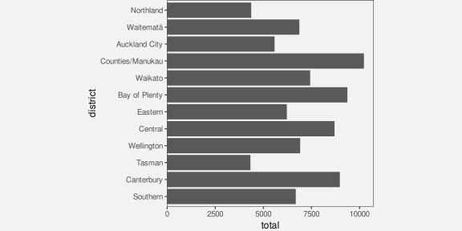
5 Length
Figure 5.1 shows a bar plot of the number of offenders in each police district in New Zealand in 2021 (for ages 14 to 16).
For the reasons outlined in Chapter 3 and Chapter 4), this data visualisation is effective for decoding the number of offenders in different police districts and making comparisons between them.
Figure 5.2 shows a bar plot of the same data, but with the bars ordered from longest to shortest. This data visualisation uses the same encodings as Figure 5.1—police districts are encoded as the vertical positions of the bars and the counts are encoded as the lengths of the bars—which means that it is also effective for comparing the number of offenders between police districts.
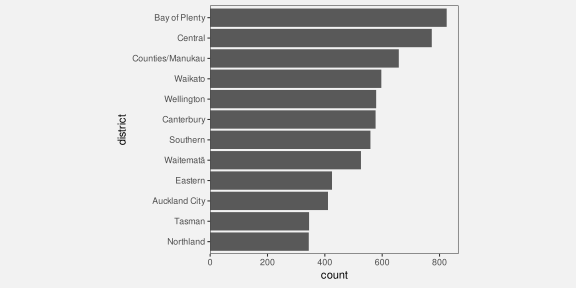
However, Figure 5.2 is more effective than Figure 5.1 for some comparisons. For example, it is easier to compare the Northland district with the Tasman district in Figure 5.2. The fact that two data visualisations with the same encodings can have a different effectiveness suggests that there is more to know about how different visual features work.
This chapter covers some more details about how well we can decode information when we have encoded data values as length.
5.1 The distance effect
In Section 3.5, we saw that position and length were the most accurate visual features (Figure 3.12). However, this accuracy decreases if the two visual features that are being compared are not in close proximity.1 For example, it is more difficult to compare the lengths of the two black bars in the set of bars at the bottom of Figure 5.3 than it is to compare the lengths of the two black bars at the top of Figure 5.3.
This helps to explain why Figure 5.2 is more effective than Figure 5.1 for some comparisons (e.g., Northland versus Tasman).
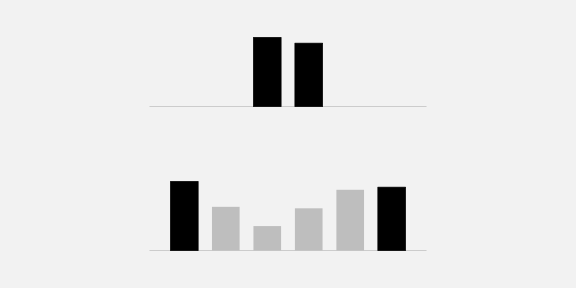
One reason for ordering the bars in a bar plot from longest to shortest is because the ordering places bars that we want to compare closer together.
5.2 Unaligned length
Figure 5.4 shows that it is harder to accurately compare the lengths of two bars if they are unaligned and do not share a common baseline (similar to the accuracy of comparing unaligned positions; Section 4.2).
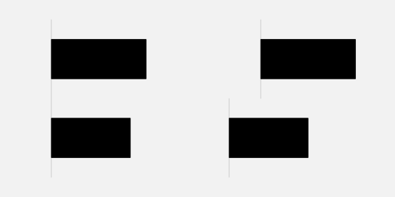
Figure 5.5 shows an alternative visualisation of the data on the number of offenders in different ethnic groups. The bar plot of these data that we saw in Figure 3.1 encoded ethnic groups as the positions of the bars so that the bars were arranged vertically with a common left-hand edge. In Figure 5.5, the ethnic groups are encoded as different colours and the bars are “stacked” horizontally.2
Although the number of offenders has been encoded as the same visual feature in both Figure 5.5 and Figure 3.1—in both cases, the number of offenders is encoded as the lengths of the bars—comparing those lengths is much harder in Figure 5.5 because the lengths are unaligned.
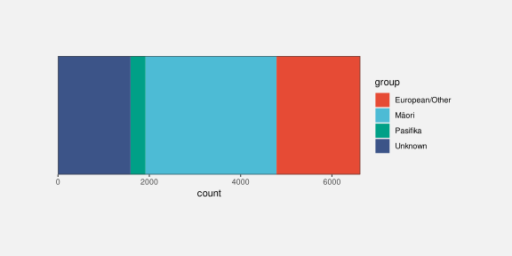
One reason why stacked bar plots are less effective for some comparisons is because we are forced to compare the unaligned lengths of the bars.
5.3 Case study: Stacked versus side-by-side bar plots
Stacking bars, which creates unaligned lengths, is something that arises when we use a bar plot to show a quantitative variable broken down by more than one qualitative variable. For example, Table 5.1 shows data on the number of offenders in different ethnic groups for individual years (from 2011 to 2021). This is a more detailed version of the data from Table 3.1.
| group | count | year | |
|---|---|---|---|
| 1 | Māori | 5957 | 2011 |
| 2 | Pasifika | 1092 | 2011 |
| 3 | European/Other | 5775 | 2011 |
| 4 | Unknown | 194 | 2011 |
| 6 | Māori | 5458 | 2012 |
| 7 | Pasifika | 1040 | 2012 |
Figure 5.6 shows the number of offenders (quantitative) for each ethnic group (qualitative) and for each year from 2011 to 2021 (treated here as qualitative, or at least discrete). In this data visualisation, the number of offenders is encoded to the lengths of the bars, the years are encoded to the horizontal position of the bars, the ethnic groups are encoded to the colours of the bars, and the bars are stacked vertically.
The problem that we face in this situation is that there are four bars to show for each year. If we simply encode the year as the horizontal position of each bar, the bars will overlap and we will have great difficulty decoding data values from the bars (Section 4.3).
Stacking the bars is one solution, but as we have just seen, this makes some comparisons more difficult. For example, we can easily see that the number of offenders in the unknown group increased after 2016, but it is much harder to see what has happened to the European/Other group since 2016.
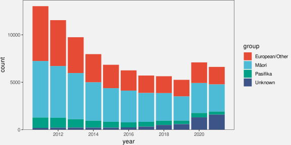
An alternative visualisation is shown in Figure 5.7. This has placed the four ethnic groups side-by-side for each year. It is now easier to see the changes over time for the European/Other group because all bars are now aligned. Unfortunately, as we saw in Section 5.1, some comparisons are more difficult because the bars are now further apart and have distractors in between.
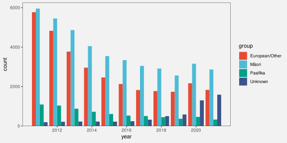
Yet another variation is shown in Figure 5.8. This time we have placed all years side-by-side for each ethnic group. This provides the clearest view of the changes over time for each ethnic group because the relevant bars are close together and aligned. However, there are other comparisons that are considerably more difficult because of the distance between the relevant bars, for example, comparing between ethnicities for a specific year.
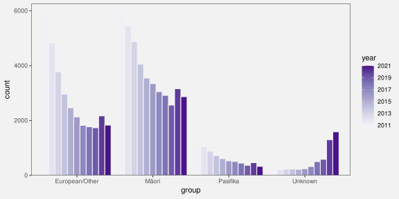
There is no single best visualisation in general for this situation because different visualisations each have their strengths and weaknesses. If a particular sort of comparison is to be emphasised, then one data visualisation might stand out, but there is also the option of providing more than one data visualisation in order to cover more comparisons.
5.4 Perception is relative
Figure 5.9 shows that the perception of differences between the lengths of bars is relative; it is easier to detect smaller differences when the visual features that we are comparing are smaller.3 It is easier to see that the pair of bars on the left have different lengths and it is harder to see that the pair of bars on the right have different lengths. All three pairs of bars have different lengths, but the absolute size of the difference is the same, so the size of the difference relative to the bar lengths gets smaller as the bars get longer.
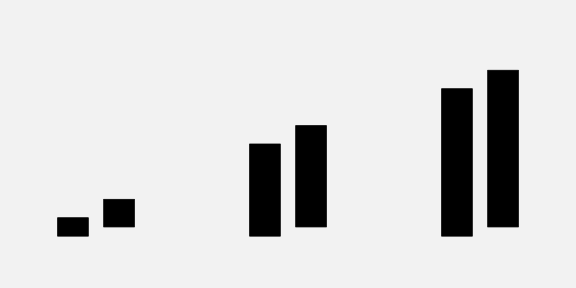
Figure 5.10 shows that we can make it easier to judge the differences by providing reference marks. Each pair of black bars in Figure 5.10 is the same and each pair of bars differs in length by the same small amount. The difference between the bars in each pair is difficult to perceive because the difference is small relative to the lengths of the bars. The reference marks in the middle and right-hand pair of bars provide shorter lengths to compare, so we are able to more easily perceive the small differences. For example, for the pair of bars on the right, we can compare the lengths of the short white gaps rather than comparing the longer black bars.
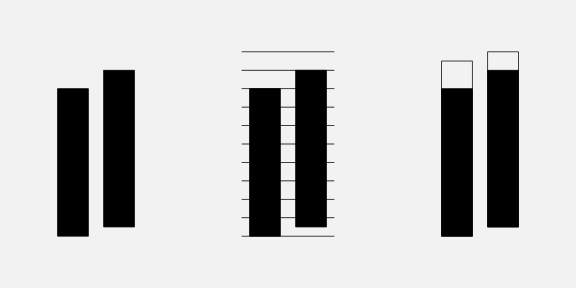
Figure 5.11 shows a bar plot of the number of offenders in each police district (Figure 5.1) with some grid lines added. Although it is difficult to compare the bars for Northland and Tasman because they are quite far apart and there are distractors in between (Section 5.1), the addition of the grid lines makes it easier to perform the comparison because we are able to compare the distances from the ends of the bars to the nearest grid line. Those distances are much shorter than the bars so it is easier to perceive that those two bars are very similar.
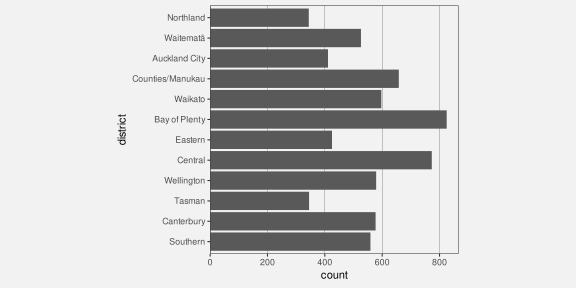
One reason why grid lines are effective is because they allow comparisons of smaller lengths or distances, which means that it is easier to perceive smaller changes.
5.5 Summary
Data visualisations can be very effective for communicating information.
However, a data visualisation that is effective for communicating one type of information may be ineffective for communicating another type of information.
The goal of this book is to explain why some data visualisations are more effective than others at communicating different types of information—how data visualisation works.
We will focus on how information can be encoded to create a visual representation. We will characterise a data visualisation in terms of the encodings that it uses to convert data values into data symbols.
The effectiveness of an encoding will depend on how well we can decode the information that we want from a visual representation. We will judge a data visualisation in terms of how well data values can be recovered from the data symbols.
There are features of the human visual system that mean that we can decode some information extremely rapidly and without effort:
A very large amount of basic information is gathered at once about simple visual features like positions, lengths, and colours.
Large, bright, colourful items automatically attract attention.
We automatically identify groups of items within an image based on similarity of basic visual features like position and colour, plus connecting lines and enclosing borders.
On the other hand, there are limitations of the visual system that suggest encodings that we should avoid:
Detailed information is only available at the centre of the visual field.
Visual memory is extremely limited.
These features suggest that encoding data values as basic visual features and generating simple, orderly data visualisations will lead to rapid and effortless decoding of information.
A simple encoding of data values to data symbols involves encoding each data value to a separate data symbol. This allows the viewer to decode and compare individual data values from the data symbols.
A simple encoding of data values to data symbols also involves encoding each data value as a basic visual feature of the data symbol, e.g., position, length, area, angle, colour, or pattern.
Position, length, area, and angle are appropriate for encoding quantitative data because we can decode numeric values from these visual features. We can decode position and length more accurately than area and angle.
Position, colour, and pattern are appropriate for encoding qualitative data because we can decode groups from these visual features. We can represent a large number of categories if we use position, but only a few categories if we use colours and patterns.
Encoding data values as the position of data symbols allows for the effective decoding of both quantitative and qualitative information, with the following caveats:
For quantitative values, what we can accurately decode are comparisons between quantitative values, not absolute quantitative values.
The decoding is most accurate for positions that share a common baseline.
Encoding identical data values as the positions of data symbols means that the data symbols overlap, which compromises our ability to decode data values from the data symbols.
We can encode one set of data values as horizontal positions and another set of data values as vertical positions because we can decode horizontal and vertical positions separately.
Decoding quantitative data values from the positions of data symbols is only accurate if the encoding is linear.
Encoding data values as the length of data symbols allows for the effective decoding of quantitative information, with the following caveats:
Comparisons between lengths are more difficult if the lengths are far apart, especially if there are distractors in between.
Comparisons between lengths are more difficult if the lengths do not have a common baseline.
Comparisons between lengths are easier for shorter lengths.
Boring, Edwin G. 1942. Sensation and Perception in the History of Experimental Psychology. Appleton-Century-Crofts.
Cleveland, William S, and Robert McGill. 1984. “Graphical Perception: Theory, Experimentation, and Application to the Development of Graphical Methods.” Journal of the American Statistical Association 79 (387): 531–54.
Lu, Min, Joel Lanir, Chufeng Wang, Yucong Yao, Wen Zhang, Oliver Deussen, and Hui Huang. 2021. “Modeling Just Noticeable Differences in Charts.” IEEE Transactions on Visualization and Computer Graphics 28 (1): 718–26. https://doi.org/10.1109/TVCG.2021.3114874.
Talbot, Justin, Heidi Lam, Jock MacKinlay, and Jeffrey Heer. 2014. “Four Experiments on the Perception of Bar Charts.” In IEEE Transactions on Visualization and Computer Graphics, 20:2152–60. 12. IEEE.
Weber, Ernst Heinrich. 1846. “Der Tastsinn Und Das Gemeingefühl.” Rudolf Wagner (Hg.): Handwörterbuch Der Physiologie. Braunschweig 3: 481–588.
The first demonstration of the “distance effect” is attributed to Cleveland and McGill (1984). It has since been replicated several times, for example, by Talbot et al. (2014) and Lu et al. (2021).↩︎
In a stacked bar plot, groups are encoded as the positions of the bars and counts are encoded as the lengths of the bars, but the positions are in the same dimension as the lengths (in this case, both position and length are horizontal). In a side-by-side bar plot, the position of the bars is in the opposite dimension to the lengths of the bars.↩︎
The idea of perception of differences being relative is a very old result from Psychology known as Weber’s Law (Weber 1846; Boring 1942).↩︎